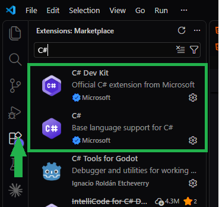

Creación de un Snippet para Razor Pages (.cshtml) en VS Code
Guía paso a paso para configurar un fragmento de código personalizado que genera automáticamente la plantilla base para vistas Razor Pages.
¿Por qué usar un snippet?
Un snippet (fragmento de código) es una plantilla reutilizable que VS Code inserta al
escribir un prefijo corto. En lugar de teclear manualmente las directivas @page,
@model, ViewData y toda la estructura HTML cada vez que creas una vista, un
snippet te permite generar todo eso en segundos.
¿Qué problema resuelve?
- Consistencia: todas tus vistas tendrán la misma estructura base.
- Velocidad: una plantilla de ~15 líneas en una sola pulsación de Tab.
- Menos errores: evita olvidar directivas o escribir mal
@model. - Aprendizaje activo: configurar tu entorno es parte del oficio del desarrollador.
Requisito Extensiones de C# en VS Code
Antes de comenzar, asegúrate de tener instaladas las extensiones oficiales de Microsoft para garantizar el soporte completo de sintaxis, autocompletado y depuración en C# y Razor:
- C# (
ms-dotnettools.csharp): Soporte base para el lenguaje C#, IntelliSense y refactorización. - C# Dev Kit (
ms-dotnettools.csdevkit): Conjunto oficial de herramientas para la administración de soluciones, proyectos y archivos Razor.
Puedes instalarlas rápidamente yendo a la pestaña de Extensiones en VS Code (Ctrl + Shift + X) y buscando "C#".

Paso 1 Abrir la Paleta de Comandos
En Visual Studio Code, presiona Ctrl + Shift + P (o F1) para
desplegar la paleta de comandos. Escribe Snippets: Configure Snippets y presiona
Enter.

Paso 2 Seleccionar el Lenguaje de Snippets
En la lista desplegable, busca y selecciona la opción aspnetcorerazor.json (ASP.NET Razor)
para asociar el snippet con archivos de extensión .cshtml.

Paso 3 Abrir el Archivo de Configuración JSON
Se abrirá el archivo de configuración aspnetcorerazor.json. Ubica la sección interna entre
las llaves principales { ... } donde se agregará la nueva estructura.
,. Un JSON mal formado es la causa más común de que
el snippet no aparezca. Ejemplo de dos snippets conviviendo:
{
"Snippet Existente": { ... },
"Plantilla Base CSHTML Razor": { ... }
}
Nota que hay una , después de la llave de cierre del primer snippet, pero
no
después del último.

Paso 4 Copiar el Fragmento de Código (Snippet)
Prepara la estructura del snippet en JSON con el prefijo, plantilla HTML/Razor y los puntos de tabulación
($1, $2, $0):
"Plantilla Base CSHTML Razor": {
"prefix": "html:razor",
"body": [
"@page",
"@model ${1:IndexModel}",
"@{\n ViewData[\"Title\"] = \"${2:Inicio}\";\n}",
"",
"<!DOCTYPE html>",
"<html lang=\"es\">",
"<head>",
" <meta charset=\"utf-8\" />",
" <meta name=\"viewport\" content=\"width=device-width, initial-scale=1.0\" />",
" <title>@ViewData[\"Title\"]</title>",
"</head>",
"<body>",
" $0",
"</body>",
"</html>"
],
"description": "Genera la plantilla base para Razor Pages (.cshtml)"
}¿Qué hace cada directiva que genera el snippet? (clic para expandir)
@page: convierte el archivo.cshtmlen una Razor Page navegable por URL.@model: declara el tipo de modelo que la vista recibirá desde el PageModel.ViewData["Title"]: título dinámico que se usa en<title>y que el layout puede leer.$0: posición final del cursor, dentro del<body>.

Paso 5 Pegar y Guardar en aspnetcorerazor.json
Pega el código anterior dentro de aspnetcorerazor.json y guarda el archivo presionando
Ctrl + S.

Paso 6 Probar el Snippet en un Archivo .cshtml
Abre un archivo de vista Razor (como VerUsuarios.cshtml), escribe el prefijo
html:razor y presiona Tab o Enter para desplegar toda la plantilla.

$1) te
ubica en la clase del modelo, la segunda ($2) en el título del ViewData, y la
tercera ($0) directamente dentro de las etiquetas <body>.
html:razor
deberías ver una sugerencia con la descripción "Genera la plantilla base para Razor Pages
(.cshtml)". Al aceptarla, el archivo debe contener las directivas @page,
@model y el bloque HTML completo con el cursor dentro del <body>.
? Solución de problemas
Si el snippet no aparece o no se expande, revisa en este orden:
- El JSON está mal formado: abre la paleta
(Ctrl+Shift+P)
y ejecuta
Problems: Focus on Problems View; los errores de sintaxis JSON aparecerán subrayados en rojo en el archivo. - Falta la coma entre snippets: revisa el ejemplo del Paso 3.
- Editaste el archivo equivocado: debe ser
aspnetcorerazor.json, nohtml.jsonnicsharp.json. - El archivo no es
.cshtml: el snippet solo se activa en archivos con esa extensión y con el modo de lenguaje "ASP.NET Razor". - La extensión C# no está activa: verifica en la pestaña de Extensiones que
ms-dotnettools.csdevkitesté habilitada. - No guardaste: Ctrl + S es obligatorio; el snippet se recarga al guardar.
Reto Actividad de refuerzo
Crea un segundo snippet en el mismo archivo aspnetcorerazor.json que genere
una tabla HTML de 3 columnas con clases de Bootstrap, y verifica que ambos snippets
convivan
sin romper el JSON.
- Prefijo sugerido:
html:tabla. - El cuerpo debe incluir
<table>,<thead>con tres<th>y un<tbody>con una fila de ejemplo. - Usa puntos de tabulación (
$1,$2,$3) para los encabezados. - Al terminar, escribe
html:razory luegohtml:tablaen un mismo archivo.cshtmlpara comprobar que ambos se despliegan.
Criterios de evaluación: JSON válido (sin errores en Problems), ambos snippets visibles en el autocompletado, y la tabla se inserta con la estructura correcta.